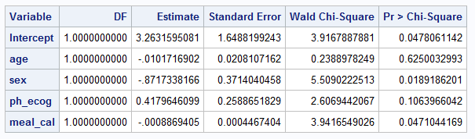
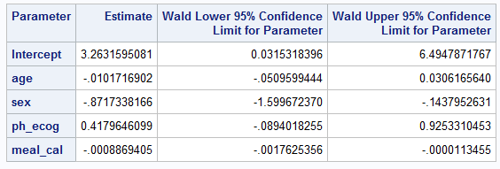
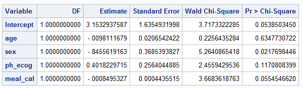
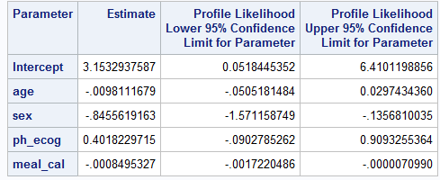
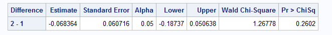
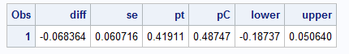

library(tidyverse)library(survival) # for example data
library(logistf) # for firth regression
library(beeca) # for covariate adjustmentComparison of results between SAS vs R for different applications of logistic regression; where possible we try to ensure the same statistical method or algorithm is specified. However, there are some underlying differences between the algorithms in SAS vs R that cannot be (at least not easily) “tweaked”. The document also provides some remarks on what parameters to look out for and what could have caused the numerical differences.
PROC LOGISTIC (with and without firth option) and %margins macrostats::glm, logistf::logistf and beeca::get_marginal_effectBelow are summary of findings from a numerical comparison using example data, where possible we specify the same algorithm in R and SAS.
Maximum Likelihood Estimates and p-values for the Model Parameters have an exact match (at 0.001 level) using glm in R vs PROC LOGISTIC procedure (without Firth option) in SAS.
When using GLM parameterization (see SAS page for explanation of parameterization types), the parameters estimates (and 95% CIs) can be exponentiated to provide odds ratios and 95% CIs for odds ratios.
An exact match (at 0.001 level) is obtained for the Odds ratios and CIs when the same method is used, however SAS Proc Logistic can only calculate Wald CI’s. Profile likelihood CIs are not available.
R using glm() function, can use the confint() function to calculate CI’s using the profile likelihood method or the confint.default() function to calculate CIs using the Wald method.
Exact match cannot be obtained for all estimates using logistf vs PROC LOGISTIC procedure (with Firth option). More specifically:
- Coefficient estimate and 95% CI matched at 0.001 level;
- Standard error are not the same (e.g., 0.02023 for age in R vs 0.02065 in SAS);
- p-value is not the same (0.6288 in R for age vs 0.6348 in SAS);
Exact match (at 0.001 level) can be obtained using get_marginal_effect in R vs %margins macro in SAS.
In the following sections, the parameterisation of logistic regression implementation (with an without Firth option) will be compared followed by numerical comparison using example data.
── Attaching core tidyverse packages ──────────────────────── tidyverse 2.0.0 ──
✔ dplyr 1.1.4 ✔ readr 2.1.5
✔ forcats 1.0.0 ✔ stringr 1.5.1
✔ ggplot2 3.5.1 ✔ tibble 3.2.1
✔ lubridate 1.9.3 ✔ tidyr 1.3.1
✔ purrr 1.0.2
── Conflicts ────────────────────────────────────────── tidyverse_conflicts() ──
✖ dplyr::filter() masks stats::filter()
✖ dplyr::lag() masks stats::lag()
ℹ Use the conflicted package (<http://conflicted.r-lib.org/>) to force all conflicts to become errorsWe use the lung dataset provided with {survival} R package. Initial data preparation involves generating a new binary outcome based on the weight change.
# the lung dataset is available in ./data/lung_cancer.csv
lung2 <- survival::lung %>%
mutate(
wt_grp = factor(wt.loss > 0, labels = c("weight loss", "weight gain"))
)
glimpse(lung2)Rows: 228
Columns: 11
$ inst <dbl> 3, 3, 3, 5, 1, 12, 7, 11, 1, 7, 6, 16, 11, 21, 12, 1, 22, 16…
$ time <dbl> 306, 455, 1010, 210, 883, 1022, 310, 361, 218, 166, 170, 654…
$ status <dbl> 2, 2, 1, 2, 2, 1, 2, 2, 2, 2, 2, 2, 2, 2, 2, 2, 2, 2, 2, 2, …
$ age <dbl> 74, 68, 56, 57, 60, 74, 68, 71, 53, 61, 57, 68, 68, 60, 57, …
$ sex <dbl> 1, 1, 1, 1, 1, 1, 2, 2, 1, 1, 1, 2, 2, 1, 1, 1, 1, 1, 2, 1, …
$ ph.ecog <dbl> 1, 0, 0, 1, 0, 1, 2, 2, 1, 2, 1, 2, 1, NA, 1, 1, 1, 2, 2, 1,…
$ ph.karno <dbl> 90, 90, 90, 90, 100, 50, 70, 60, 70, 70, 80, 70, 90, 60, 80,…
$ pat.karno <dbl> 100, 90, 90, 60, 90, 80, 60, 80, 80, 70, 80, 70, 90, 70, 70,…
$ meal.cal <dbl> 1175, 1225, NA, 1150, NA, 513, 384, 538, 825, 271, 1025, NA,…
$ wt.loss <dbl> NA, 15, 15, 11, 0, 0, 10, 1, 16, 34, 27, 23, 5, 32, 60, 15, …
$ wt_grp <fct> NA, weight gain, weight gain, weight gain, weight loss, weig…We use the trial01 dataset provided with {beeca} R package. Initial data preparation involves setting the treatment indicator as a categorical variable and removing any incomplete cases.
The following set of tables compare how to configure particular parameters / attributes of the methodologies.
| Attribute | SAS PROC LOGISTIC |
R stats::glm |
Description | Note |
|---|---|---|---|---|
| Likelihood optimization algorithm | Default | Default | Fisher’s scoring method (i.e., iteratively reweighted least squares (IRLS)) | For logistic regression, parameter estimates and covariance matrices estimated should be the same for both Fisher’s and Newton-Raphson algorithm for maximum likelihood. |
| Convergence criteria | Default | NA | Specifies relative gradient convergence criterion (GCONV=1E–8) | InPROC LOGISTIC there are three other convergence criteria which can be specified. However, there is no exact criterion that matches the criteria in stats::glm. |
| Convergence criteria | NA | Default | Specifies relative difference between deviance < 1E–8. | |
| Confidence interval (CI) estimation method | Default | confint.default() |
Wald CI | In stats::glm in R, function confint.default() gives the Wald confidence limits; whereas function confint() gives the profile-likelihood limits. |
| Hypothesis tests for regression coefficients | Default | Default | Wald tests, which are based on estimates for the regression coefficients and its corresponding standard error. |
Every effort is made to ensure that the R code employs estimation methods/ optimization algorithms/ other components that closely match (as much as possible) those used in the SAS code.
glm in RNote, the default fitting method in glm is consistent with the default fitting method in PROC LOGISTIC procedure.
glm is iteratively reweighted least squares, and the documentation can be found here.PROC LOGISTIC procedure is Fisher’s scoring method, which is reported as part of the SAS default output, and it is equivalent to “Iteratively reweighted least squares” method as reported in this documentation.# stats::glm function
m1 <- glm(wt_grp ~ age + sex + ph.ecog + meal.cal, data = lung2, family = binomial(link="logit"))
# model coefficients summary
summary(m1)$coefficients Estimate Std. Error z value Pr(>|z|)
(Intercept) 3.2631672833 1.6488206996 1.9790917 0.04780569
age -0.0101717451 0.0208107243 -0.4887742 0.62500157
sex -0.8717357187 0.3714041991 -2.3471348 0.01891841
ph.ecog 0.4179665342 0.2588653214 1.6146100 0.10639518
meal.cal -0.0008869427 0.0004467405 -1.9853642 0.04710397Note, function confint.default gives the Wald confidence limits, which is the default option in SAS PROC LOGISTIC procedure; whereas confint gives the profile-likelihood limits. Conditional odds ratio is calculated by taking the exponential of the model parameters.
PROC LOGISTIC in SAS (without firth option)PROC LOGISTIC DATA=LUNG2; # import lung
MODEL WT_GRP(EVENT="weight_gain") = AGE SEX PH_ECOG MEAL_CAL;
ods output ESTIMATEs=estimates;
run;Below is screenshot of output tables summarizing coefficient estimates and confidence intervals


The following set of tables compare how to configure particular parameters / attributes of the methodologies.
| Attribute | SAS PROC LOGISTIC w/ Firth option |
R logistf::logistf |
Description | Note |
|---|---|---|---|---|
| Likelihood optimization algorithm | Default | control =logistf.control (fit =“IRLS”) |
Fisher’s scoring method (i.e., iteratively reweighted least squares (IRLS)) | |
| Likelihood optimization algorithm | TECHNIQUE = NEWTON |
Default | Newton-Raphson algorithm | |
| Convergence criteria | Default | NA | Specifies relative gradient convergence criterion (GCONV=1E–8). | InPROC LOGISTIC there are three other convergence criteria which can be specified. If more than one convergence criterion is specified, the optimization is terminated as soon as one of the criteria is satisfied. |
| Convergence criteria | NA | Default | Specifies three criteria that need to be met: the change in log likelihood is less than lconv (default is 1E-5), the maximum absolute element of the score vector is less than gconv (default is 1E-5), and the maximum absolute change in beta is less than xconv (default is 1E-5). | The gconv criteria in logistif is different from GCONV in SAS. The lconv criteria is also not exactly the same as the ABSFCONV or FCONV in PROC LOGISTIC in SAS, although the criteria use log likelihood. However, the xconv in R and XCONV in SAS seems to be consistent. |
| Convergence criteria | XCONV = 1E–8 |
control = logistf.control( xconv = 1E–8, lconv = 1, gconv = 1) |
Specifies the maximum absolute change in beta < 1E–8. | In logistf, three convergence criteria are checked at the same time. So here we use a large convergence criteria value for lconv and gconv to mimic the scenario where only xconv is checked. |
| Confidence interval (CI) estimation method | Default | pl= FALSE |
Wald CI | For logistf: “Note that from version 1.24.1 on, the variance-covariance matrix is based on the second derivative of the likelihood of the augmented data rather than the original data, which proved to be a better approximation if the user chooses to set a higher value for the penalty strength.” This could cause differences in standard error estimates in R vs SAS for Firth logistic regression, and consequently results in differences in the corresponding Wald CI estimates and hypothesis tests results (e.g., p-values). |
| Confidence interval (CI) estimation method | CLPARM = PL CLODDS = PL |
Default | Profile likelihood-based CI | For Firth’s bias-reduced logistic regression, it makes more sense to use penalized likelihood-based CI so it is consistent with the parameter estimation method which uses penalized maximum likelihood. |
| Hypothesis tests for regression coefficients | Default | pl= FALSE | Wald tests, which are based on estimates for the regression coefficients and its corresponding standard error. | |
| Hypothesis tests for regression coefficients | NA | Default | “Likelihood ratio tests”, which are based on profile penalized log likelihood. | In SAS, when the model statement option CLPARM = PL is specified, the CI will be calculated based on profile likelihood. However, the hypothesis testing method is still a Wald method. This could cause results mismatch in the p-value. |
Note that while Firth logistic regression is not required for our example dataset nonetheless we use it for demonstration purposes only.
logistf in RBy default, the convergence criteria in logistf specifies that three criteria need to be met at the same time, i.e., the change in log likelihood is less than lconv (default is 1E-5), the maximum absolute element of the score vector is less than gconv (default is 1E-5), and the maximum absolute change in beta is less than xconv (default is 1E-5). In SAS, the default convergence criteria in PROC LOGISTIC specifies relative gradient convergence criterion (GCONV=1E–8); while SAS also support three other convergence criteria but when there are more than one convergence criterion specified, the optimization is terminated as soon as one of the criteria is satisfied. By looking at the R pacakge/SAS documentation, the gconv criteria in logistif function is different from the GCONV in SAS. The lconv criteria is also not exactly the same as the ABSFCONV or FCONV in PROC LOGISTIC in SAS, although the criteria use log likelihood. However, similar convergence criteria might be obtained by using the maximum absolute change in parameter estimates (i.e., xconv in R and SAS). Therefore, for comparison with the SAS output, in logistf function, we use a large convergence criteria value for lconv and gconv to mimic the scenario where only xconv is checked, i.e., specify logistf.control(xconv = 0.00000001, gconv = 1, lconv = 1) for the control argument.
By default, logistf function in R computes the confidence interval estimates and hypothesis tests (including p-value) for each parameter based on profile likelihood, which is also reported in the output below. However, Wald method (confidence interval and tests) can be specified by specifying the control argument with pl = FALSE.
firth_mod <- logistf(wt_grp ~ age + sex + ph.ecog + meal.cal,
data=lung2,
control = logistf.control(fit ="IRLS",
xconv = 0.00000001,
gconv = 1,
lconv = 1))
summary(firth_mod)$coefficientslogistf(formula = wt_grp ~ age + sex + ph.ecog + meal.cal, data = lung2,
control = logistf.control(fit = "IRLS", xconv = 1e-08, gconv = 1,
lconv = 1))
Model fitted by Penalized ML
Coefficients:
coef se(coef) lower 0.95 upper 0.95 Chisq
(Intercept) 3.1532937589 1.6031659729 0.051844703 6.410119e+00 3.9726447
age -0.0098111679 0.0202315630 -0.050518148 2.974343e-02 0.2337368
sex -0.8455619163 0.3632129422 -1.571158740 -1.356810e-01 5.4536777
ph.ecog 0.4018229715 0.2520090355 -0.090278518 9.093255e-01 2.5553004
meal.cal -0.0008495327 0.0004288525 -0.001722033 -7.098976e-06 3.9058205
p method
(Intercept) 0.04624509 2
age 0.62876680 2
sex 0.01952718 2
ph.ecog 0.10992492 2
meal.cal 0.04811912 2
Method: 1-Wald, 2-Profile penalized log-likelihood, 3-None
Likelihood ratio test=10.54964 on 4 df, p=0.03212009, n=170
Wald test = 33.85701 on 4 df, p = 7.972359e-07 (Intercept) age sex ph.ecog meal.cal
3.1532937589 -0.0098111679 -0.8455619163 0.4018229715 -0.0008495327 Note, function confint gives the profile-likelihood limits. Given the parameters from Firth’s bias-reduced logistic regression is estimated using penalized maximum likelihood, confint function is used. Conditional odds ratio is calculated by taking the exponential of the model parameters.
est Lower 95% Upper 95%
(Intercept) 3.1532937589 0.051844703 6.410119e+00
age -0.0098111679 -0.050518148 2.974343e-02
sex -0.8455619163 -1.571158740 -1.356810e-01
ph.ecog 0.4018229715 -0.090278518 9.093255e-01
meal.cal -0.0008495327 -0.001722033 -7.098976e-06PROC LOGISTIC in SAS (with firth option)Note, by default, SAS computes confidence interval based on Wald tests. Given the parameters from Firth’s method is estimated using penalized maximum likelihood, below specifies CLODDS = PL CLPARM=PL (based on profile likelihood), which is consistent with the maximization method and the R code above. However, the default hypothesis test for the regression coefficients is still a Wald test, and the Chi-square statistics is calculated based on coefficient estimate and its corresponding standard error.
XCONV specifies relative parameter convergence criterion, which should correspond to the xconv in logistf function in R. We specify XCONV = 0.00000001 so it should be consistent with the R code above.
PROC LOGISTIC DATA=LUNG2;
MODEL WT_GRP(EVENT="weight gain") = AGE SEX PH_ECOG MEAL_CAL / firth clodds=PL clparm=PL xconv = 0.00000001;
ods output ESTIMATEs=estimates;
run;Below is screenshot of output tables summarizing coefficient estimates and it’s 95% CI


Exact match cannot be obtained for all estimates using logistf vs PROC LOGISTIC procedure with Firth option. More specifically:
- Coefficient estimate and its 95% CI matched at 0.001 level;
- Standard error are not the same (e.g., 0.02023 for age in R vs 0.02065 in SAS);
- p-value is not the same (0.6288 in R for age vs 0.6348 in SAS);
We compare two implementions of g-computation in SAS:
PROC GENMOD procedure to implement the working logistic regression model and require another macro %NLEST to calculate contrasts that requires delta methodl such as risk ratio or odds ratio.PROC LOGISTIC procedure to implement the working logistic regression model. PROC IML is used to calculate the delta method to determine the standard errors.get_marginal_effect in RWe fit a logistic regression model with covariate adjustment to estimate the marginal treatment effect using the delta method for variance estimation: as outlined in Ge et al (2011).
## fit the model including model based variance estimation with delta method
fit1 <-
glm(aval ~ trtp + bl_cov, family = "binomial", data = trial01) %>%
get_marginal_effect(
trt = "trtp",
method = "Ge",
contrast = "diff",
reference = "0",
type = "model-based"
)
cat("Marginal treatment effect = ", fit1$marginal_est, "\n",
"Standard error = ", fit1$marginal_se, "\n"
)Marginal treatment effect = -0.06836399
Standard error = 0.06071641 %Margins macro in SASWe now use the SAS [%Margins] (https://support.sas.com/kb/63/038.html) macro to perform the Ge et al. (2011) method on trial01 to estimate the marginal risk difference and it’s standard error.
%Margins(data = myWork.trial01,
class = trtp,
classgref = first, /*Set reference to first level*/
response = avaln,
roptions = event='1', /*Ensure event is set to 1 = Yes */
dist = binomial,
model = trtp bl_cov,
margins = trtp,
options = cl diff reverse, /*Specify risk difference contrast and
direction of treatment effect is correct*/
link = logit); /*Specify logit link function */
** Store output data sets ;
data myWork.margins_trt_estimates;
set work._MARGINS;
run;
data myWork.margins_trt_diffs;
set work._DIFFSPM;
run;
%LR macro in SAS (Ge et al, 2011)%LR(data = myWork.trial01, /* input data set */
var1 = bl_cov, /* continuous covariates in the logistic regression */
var2 = trtp, /* categorical covariates in the logistic regression */
p1 = 1, /* number of continuous covariates in the logistic regression */
p2 = 1, /* number of categorical covariates in the logistic regression */
resp = avaln, /* binary response variable in the logistic regression */
ntrt = 1); /* position of the treatment variable in the categorical covariates */
data myWork.ge_macro_trt_diffs;
set work.geout;
run;
Exact match at the 0.001 level.
In summary, there are a few things to be aware of when comparing logistic regression results in R vs SAS. It is crucial to carefully manage the input parameters for each model to ensure they are configured similarly for logistic regression analyses. As highlighted also in Logistic Regression in SAS, the variable parameterization is also important for modelling and interpretation, ensuring the types of variable (continuous vs. categorical) and reference values of categorical variable are applied as expected.
The default likelihood optimization method in glm and PROC LOGISTIC is the same (i.e., Fisher’s scoring method or iteratively reweighted least squares (IRLS)).
However, the default optimization method in logistf is Newton-Raphson, which can be modified into IRLS via control = logistf.control(fit = “IRLS”). Alternatively, one could specify technique = newton in the model statement in SAS to modify the likelihood optimization method.
Although both SAS and R allows options to modify the convergence criteria, the criteria does not seem to be exactly the same, which could cause results mismatch in some scenarios.
The default convergence criteria in PROC LOGISTIC specifies the relative gradient convergence criterion; where the default convergence criteria in glm specifies relative difference between deviance.
The default setting in logistf have checked more than one convergence criterion in its algorithm (i.e., change in log likelihood, derivative of the log likelihood and parameter estimates). One could specify a very large value for two of the criteria in order to mimic the scenario where only one criterion is checked (e.g., control = logistf.control (xconv = 0.00000001, lconv = 1, gconv = 1) in logistf in R should be consistent to the option of xconv = 0.00000001 in SAS).
The confint() function in R will computes profile likelihood based CI for glm fitted model. However, in SAS, the default confidence interval is Wald CI. To match the default CI calculation in SAS for glm fitted model, use confint.default() function in R.
Nevertheless, Firth’s biased-reduced logistic regression estimates parameter using penalized maximum likelihood, it makes more sense to use confint() function for logistf fitted model. In the meantime, in SAS, when fitting a Firth’s logistic regression, it is also better to specify the model statement option clparm = pl which will also generate profile penalized likelihood CI.
We shall note that in the Firth logistic regression numerical example, the estimated standard errors does not match, but the CIs match at 0.001 level. This is because the CI was estimated based on profile penalized likelihood in R and SAS, and please see the next discussion point for potential reasons about differences between the estimated standard error. (I have compared Wald CIs estimated in R vs SAS, which could not match. This make sense as Wald CIs are calculated based on the estimated standard errors.)
The default hypothesis tests for the regression coefficients are the same in glm and PROC LOGISTIC, which are both Wald tests and calculated based on estimates for the regression coefficients and its corresponding standard error.
As for logistf function, the default hypothesis testing method is based on profile penalized log likelihood (source code here). And it was noted in the R documentation that, “from version 1.24.1 on, the variance-covariance matrix is based on the second derivative of the likelihood of the augmented data rather than the original data, which proved to be a better approximation if the user chooses to set a higher value for the penalty strength.” This could cause difference in the estimate of standard error in R vs SAS for Firth logistic regression, and consequently results in differences in the corresponding Wald CI estimates and hypothesis tests results (e.g., p-values).
Wald method can be used in a logistf function in R by specifying pl = FALSE in the control argument, which should correspond to the method used in SAS to calculate p-value. However, when specifying pl = FALSE, the CI is also calculated using Wald method.
logistf package in R.logistf package in R.logistf R package, which was based on PROC IML instead of PROC LOGISTIC and was probably authored before the availability of Firth option in PROC LOGISTIC statement in SAS.
Comment on model selection
As indicated in Logistic regression in R and Logistic regression in SAS, the chi-Sq test statistics and p-values are different when performing model selections in R vs. SAS. The reason for this discrepancy is that the chi-Sq statistics from
anova()in R is based on deviance test using residual deviance while the chi-Sq statistics fromPROC LOGISTICw/SELECTIONoption in SAS is based on Wald test using z-values squared.Exact match (at 0.001 level) can be obtained using
glmin R vsPROC LOGISTICprocedure (without Firth option) in SAS, for coefficient estimates, 95% CI, and for p-value.